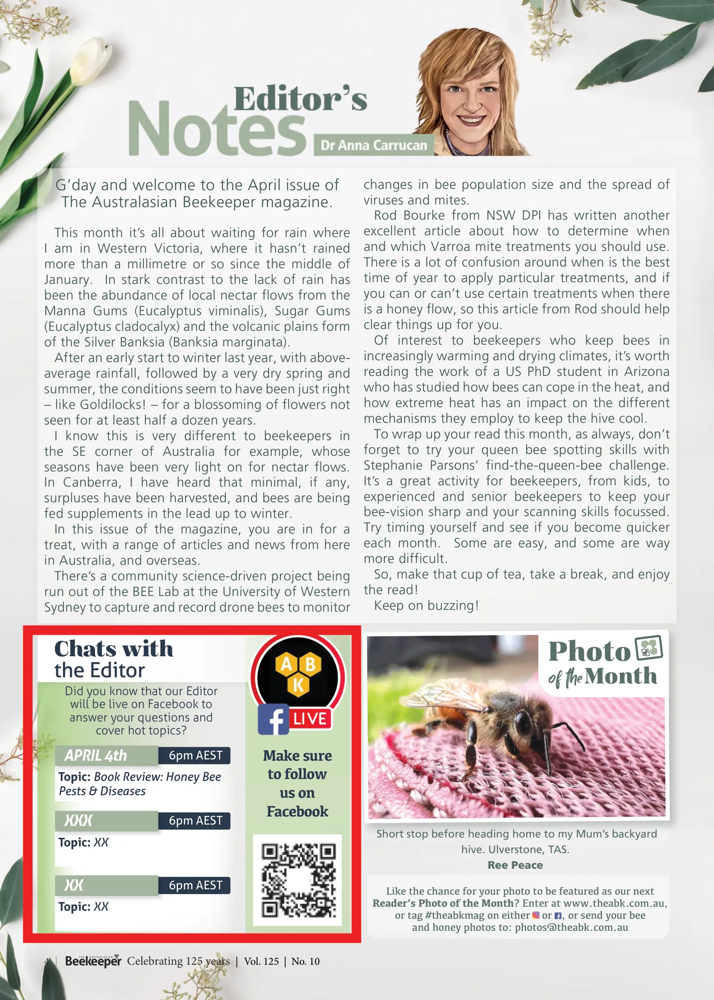

Like the chance for your photo to be featured as our next
Reader’s Photo of the Month? Enter at www.theabk.com.au,
or tag #theabkmag on either or , or send your bee
and honey photos to: photos@theabk.com.au
G’day and welcome to the April issue of
The Australasian Beekeeper magazine.
This month it’s all about waiting for rain where
I am in Western Victoria, where it hasn’t rained
more than a millimetre or so since the middle of
January. In stark contrast to the lack of rain has
been the abundance of local nectar flows from the
Manna Gums (Eucalyptus viminalis), Sugar Gums
(Eucalyptus cladocalyx) and the volcanic plains form
of the Silver Banksia (Banksia marginata).
After an early start to winter last year, with above-
average rainfall, followed by a very dry spring and
summer, the conditions seem to have been just right
– like Goldilocks! – for a blossoming of flowers not
seen for at least half a dozen years.
I know this is very different to beekeepers in
the SE corner of Australia for example, whose
seasons have been very light on for nectar flows.
In Canberra, I have heard that minimal, if any,
surpluses have been harvested, and bees are being
fed supplements in the lead up to winter.
In this issue of the magazine, you are in for a
treat, with a range of articles and news from here
in Australia, and overseas.
There’s a community science-driven project being
run out of the BEE Lab at the University of Western
Sydney to capture and record drone bees to monitor
changes in bee population size and the spread of
viruses and mites.
Rod Bourke from NSW DPI has written another
excellent article about how to determine when
and which Varroa mite treatments you should use.
There is a lot of confusion around when is the best
time of year to apply particular treatments, and if
you can or can’t use certain treatments when there
is a honey flow, so this article from Rod should help
clear things up for you.
Of interest to beekeepers who keep bees in
increasingly warming and drying climates, it’s worth
reading the work of a US PhD student in Arizona
who has studied how bees can cope in the heat, and
how extreme heat has an impact on the different
mechanisms they employ to keep the hive cool.
To wrap up your read this month, as always, don’t
forget to try your queen bee spotting skills with
Stephanie Parsons’ find-the-queen-bee challenge.
It’s a great activity for beekeepers, from kids, to
experienced and senior beekeepers to keep your
bee-vision sharp and your scanning skills focussed.
Try timing yourself and see if you become quicker
each month. Some are easy, and some are way
more difficult.
So, make that cup of tea, take a break, and enjoy
the read!
Keep on buzzing!
Short stop before heading home to my Mum’s backyard
hive. Ulverstone, TAS.
Ree Peace
Did you know that our Editor
will be live on Facebook to
answer your questions and
cover hot topics?
Chats with
the Editor
Make sure
to follow
us on
6pm AEST
APRIL 4th
Topic: Book Review: Honey Bee
Pests & Diseases
6pm AEST
XXX
Topic: XX
6pm AEST
XX
Topic: XX
4 |
Celebrating 125 years | Vol. 125 | No. 10